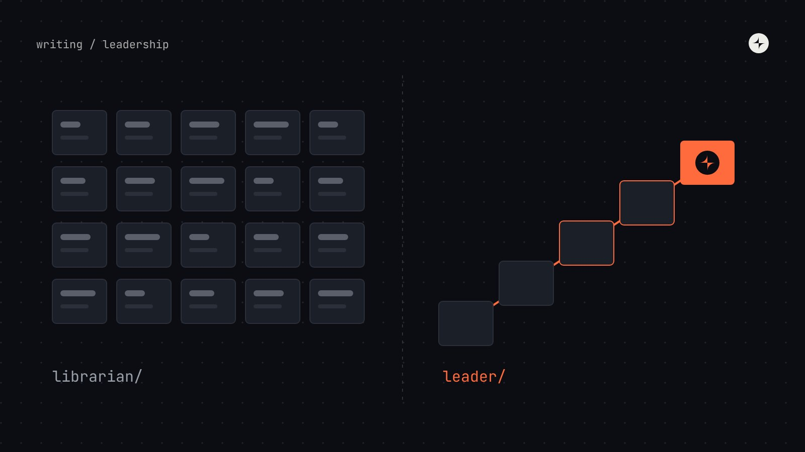
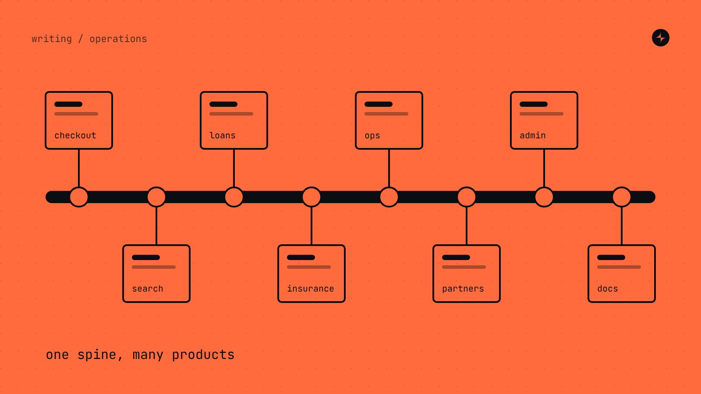
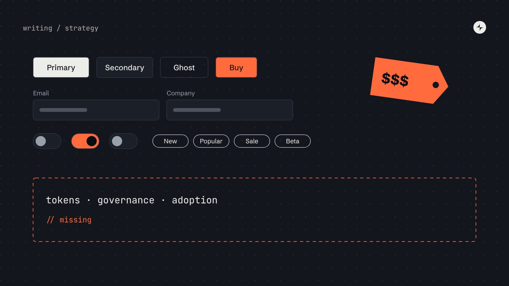
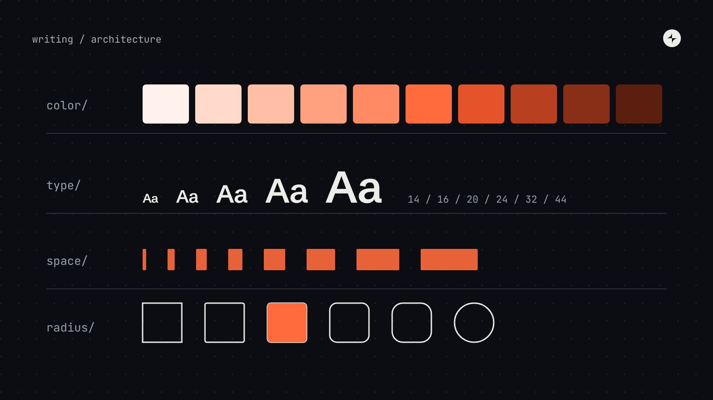

Writing
Long-form notes on governance, tokens and the organisational side of design systems.

Most design system leads are just librarians
Leadership · 12 min
Design systems as operational backbones
Operations · 5 min · Medium
Most design systems are just expensive UI libraries
Strategy · 8 min · Medium